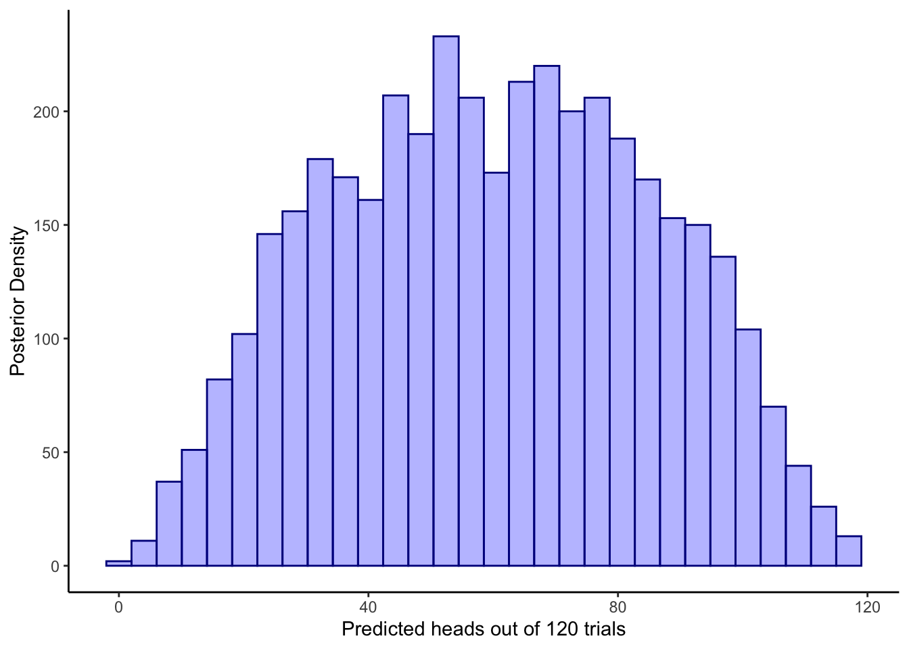
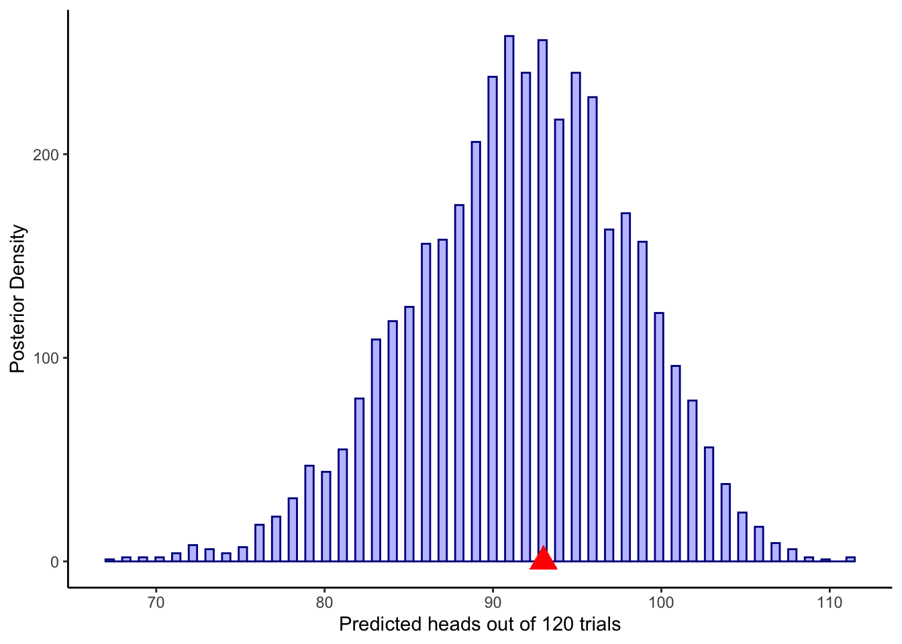
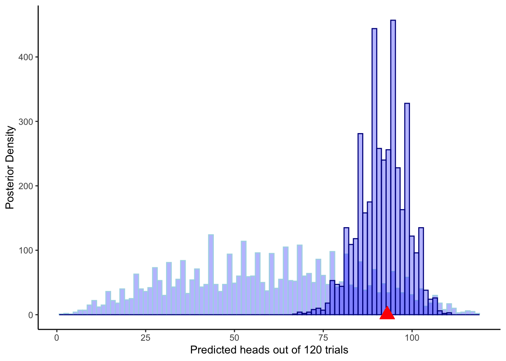

Chapter 5 Practical exercise 4 - Model quality checks
This document covers: - generating and plotting priors (against posteriors) - generating and plotting predictive checks (prior and posterior ones) - prior sensitivity checks
5.1 Generating and plotting additional variables
As we try to understand our model, we might want to plot how the prior relates to the posterior, or - in other words, what has the model learned from looking at the data? We can do so by overlaying the prior and the posterior distributions, what is also called a “prior - posterior update check”.
Stan does not automatically save the prior distribution, so we need to tell it to generate and save prior distributions in a convenient place so we can easily plot or use them at will from R. Luckily, Stan gives us a dedicated code chunk to do that: the generated quantities chunk. As before, we need to define the kind of variable we want to save, and then how to generate it.
If we take the example of the random agent (with a bias), we have one parameter: theta. We can then generate theta according to the prior in generated quantities. While we are at this, we can also generate a nicer version of the posterior estimate for the theta parameter, now in probability scale (instead of log odds).
However, prior and posterior estimates are not always the most immediate thing to understand. For instance, we might have trouble having a good grasp for how the uncertainty in the estimate will play out on 120 trials, or 6 trials, or however many trials we are planning for our experiment. Luckily, we can ask Stan to run predictions from either priors or posteriors, or both: given the priors how many trials will have “right hand” choice? and given the posterior estimates?
As we use complex models, the relation between prior/posterior estimates and predictions becomes less and less intuitive. Simulating their implications for the outcomes - also called prior/posterior predictive checks - becomes a very useful tool to adjust our priors and their uncertainty so that they reflect what we know of the outcome scale; as well as to assess whether the model (and its posterior estimates) can appropriately describe the data we observe, or there’s some bias there. More discussion of this can be found at https://4ccoxau.github.io/PriorsWorkshop/.
stan_model <- "
// This model infers a random bias from a sequences of 1s and 0s (right and left hand choices)
// The input (data) for the model. n of trials and the sequence of choices (right as 1, left as 0)
data {
int<lower=1> n; // n of trials
array[n] int h; // sequence of choices (right as 1, left as 0) as long as n
}
// The parameters that the model needs to estimate (theta)
parameters {
real theta; // note it is unbounded as we now work on log odds
}
// The model to be estimated (a bernoulli, parameter theta, prior on the theta)
model {
// The prior for theta on a log odds scale is a normal distribution with a mean of 0 and a sd of 1.
// This covers most of the probability space between 0 and 1, after being converted to probability.
target += normal_lpdf(theta | 0, 1);
// The model consists of a bernoulli distribution (binomial w 1 trial only) with a rate theta,
// note we specify it uses a logit link (theta is in logodds)
target += bernoulli_logit_lpmf(h | theta);
}
generated quantities{
real<lower=0, upper=1> theta_prior; // theta prior parameter, on a prob scale (0-1)
real<lower=0, upper=1> theta_posterior; // theta posterior parameter, on a prob scale (0-1)
int<lower=0, upper=n> prior_preds; // distribution of right hand choices according to the prior
int<lower=0, upper=n> posterior_preds; // distribution of right hand choices according to the posterior
theta_prior = inv_logit(normal_rng(0,1)); // generating the prior on a log odds scale and converting
theta_posterior = inv_logit(theta); // converting the posterior estimate from log odds to prob.
prior_preds = binomial_rng(n, theta_prior);
posterior_preds = binomial_rng(n, inv_logit(theta));
}
"
write_stan_file(
stan_model,
dir = "stan/",
basename = "W4_SimpleBernoulli_logodds.stan")## [1] "/Users/au209589/Dropbox/Teaching/AdvancedCognitiveModeling23_book/stan/W4_SimpleBernoulli_logodds.stan"## With the logit format
## Specify where the model is
file <- file.path("stan/W4_SimpleBernoulli_logodds.stan")
mod <- cmdstan_model(file,
cpp_options = list(stan_threads = TRUE),
stanc_options = list("O1"))## Model executable is up to date!d1 <- d %>% subset(noise == 0 & rate == 0.8)
## Create the data. N.B. note the two variables have different lengths: 1 for n, n for h.
data <- list(
n = 120, # n of trials
h = d1$choice # sequence of choices (h stands for hand)
)
# The following command calls Stan with specific options.
samples <- mod$sample(
data = data,
seed = 123,
chains = 2,
parallel_chains = 2,
threads_per_chain = 2,
iter_warmup = 1000,
iter_sampling = 2000,
refresh = 0,
max_treedepth = 20,
adapt_delta = 0.99,
)## Running MCMC with 2 parallel chains, with 2 thread(s) per chain...
##
## Chain 1 finished in 0.1 seconds.
## Chain 2 finished in 0.1 seconds.
##
## Both chains finished successfully.
## Mean chain execution time: 0.1 seconds.
## Total execution time: 0.1 seconds.draws_df <- as_draws_df(samples$draws()) 5.2 Now we can better assess the prior
# Now let's plot the density for theta (prior and posterior)
ggplot(draws_df) +
geom_density(aes(theta_posterior), fill = "blue", alpha = 0.3) +
geom_density(aes(theta_prior), fill = "red", alpha = 0.3) +
geom_vline(xintercept = 0.8, linetype = "dashed", color = "black", size = 1.5) +
xlab("Rate") +
ylab("Estimate Densities") +
theme_classic()
5.3 as well as how the model was predicting the outcome to be before and after seeing the data.
ggplot(draws_df) +
geom_histogram(aes(prior_preds), color = "darkblue", fill = "blue", alpha = 0.3) +
xlab("Predicted heads out of 120 trials") +
ylab("Posterior Density") +
theme_classic()## `stat_bin()` using `bins = 30`. Pick better value with `binwidth`.
ggplot(draws_df) +
geom_histogram(aes(posterior_preds), color = "darkblue", fill = "blue", alpha = 0.3, bins = 90) +
geom_point(x = sum(data$h), y = 0, color = "red", shape = 17, size = 5) +
xlab("Predicted heads out of 120 trials") +
ylab("Posterior Density") +
theme_classic()
ggplot(draws_df) +
geom_histogram(aes(prior_preds), color = "lightblue", fill = "blue", alpha = 0.3, bins = 90) +
geom_histogram(aes(posterior_preds), color = "darkblue", fill = "blue", alpha = 0.3, bins = 90) +
geom_point(x = sum(data$h), y = 0, color = "red", shape = 17, size = 5) +
xlab("Predicted heads out of 120 trials") +
ylab("Posterior Density") +
theme_classic()